Es kann im Ribbon zwischen diesen beiden Arten selektiert werden. Mit den Optionen "Einzel-E-Mail" und "Serien-E-Mail" können Emails an einen oder mehrere Empfänger versendet werden.
Bei der Option "Einzel-E-Mail" wird eine E-Mail an alle Personen versendet. Im Gegensatz dazu wird bei "Serien-E-Mail" pro Adressaten eine E-Mail versendet.
Wenn das Postausgangsbuch aus der Merkliste, der Kampagne o. ä. geöffnet wird, verwendet das Programm automatisch "Serien-E-Mail". Hierbei können alle Optionen zum detaillierten Schreiben verwendet werden.
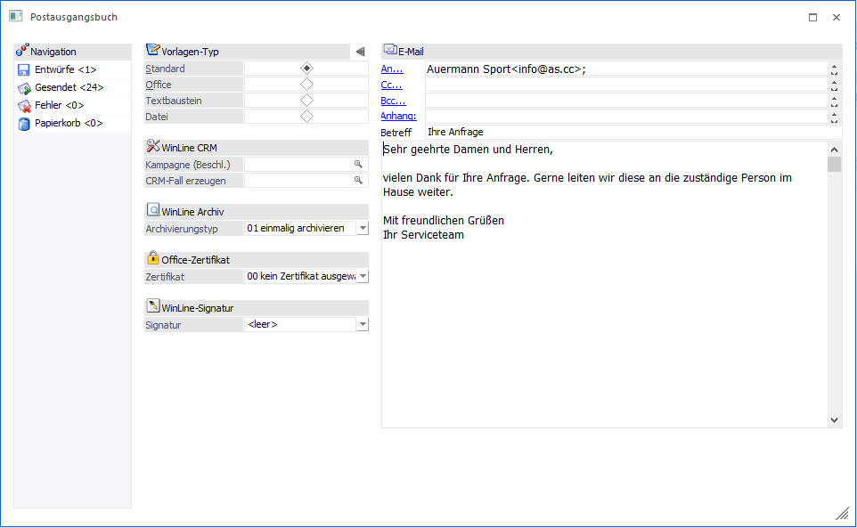
Beim Mailversand können die Datensätze über Matchcode-Funktionen abgerufen werden. Die Felder "An:", "Cc:" und "Bcc:" können befüllt werden. Der "E-Mail-Matchcode" hilft bei der Suche nach Kontakten und deren E-Mail-Adressen. Der Matchcode öffnet sich sobald man entweder den Namen, oder die jeweilige E-Mail-Adresse zu schreiben beginnt, in den jeweiligen Eingabefeldern die F9-Taste drückt, oder via Klick auf "An:", "Cc:" oder "Bcc".
Im sich öffnenden Fenster "E-Mail-Matchcode" kann nach allen E-Mail-Empfängern gesucht werden. Der (oder die) im Matchcode ausgewählte(n) Datensatz (Datensätze) werden in den entsprechenden Feldern angezeigt.
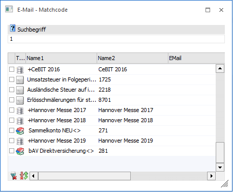
Bei der manuellen Eingabe einer E-Mail Adresse öffnet sich der "E-Mail-Matchcode" bei der Eingabe der ersten Zeichen. Sogleich sucht das Programm nach möglichen Treffern.
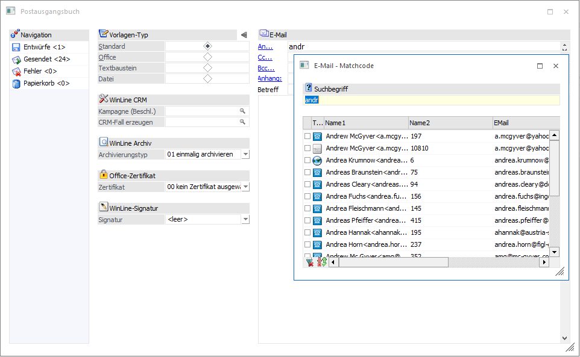
Für einen E-Mailversand an eine Kampagne kann der Matchcode auf alle Kampagnen mit einem "+" im Adressfeld angezeigt werden.
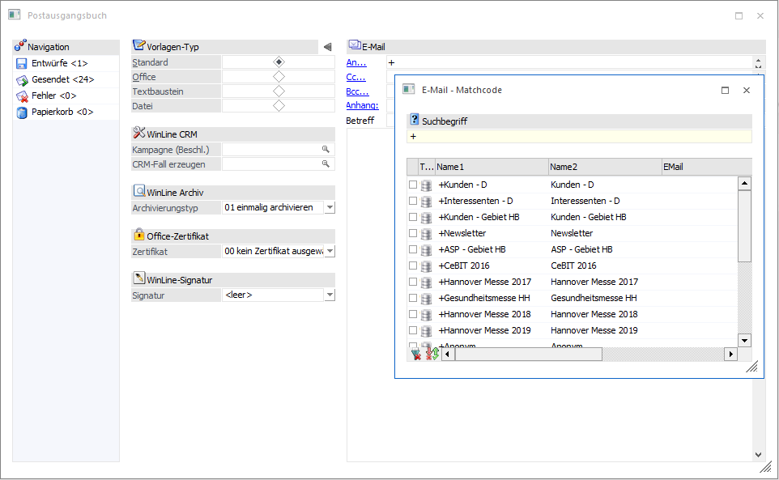
Aus dem "E-Mail-Matchcode" kann dann der gewünschte Empfänger ausgewählt und mit der Eingabetaste der Tastatur übernommen werden - wodurch dann der Name und die E-Mail-Adresse des Empfängers im Feld "An" angezeigt wird.
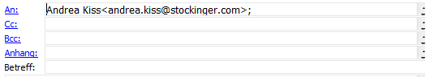
Dieser Vorgang kann auch in den Feldern "Cc" und "Bcc" wie auch im Feld "An" beliebig oft wiederholt werden. Es können aber auch Empfänger eingetragen werden, die nicht in der WinLine angelegt sind. In diesem Fall werden keine zusätzlichen Informationen angezeigt.
Ø Anhang
Durch das Anwählen von "Anhang" können neue Anhänge hinzugefügt werden, die dann auch im Bereich "Attachment" angezeigt werden. Ein Anhang kann auch entfernt werden, indem er zuerst angeklickt wird und dann die Entfernen-Taste gedrückt wird.
Ø Vorlagen-Typ
Es kann aus den folgend aufgeführten Nachrichten-Typen gewählt werden:
ü Standard
Mit dem Nachrichtentyp
kann eine E-Mail mit Anhang an einen oder mehrere Empfänger versendet
werden.
ü Office
Mit dem Nachrichtentyp
"Office" kann eine E-Mail mit Anhang an Microsoft Office zur detaillierten
Bearbeitung übergeben werden. Von dort kann anschließend auch an den/die
jeweiligen Adressaten versendet werden. Seriendruckfelder, welche in der WinLine
eingepflegt wurden, können in Microsoft Office in das Mail integriert
werden.
ü Textbaustein
Mit dem
Nachrichtentyp "Textbaustein" können bestehende Textbausteine (die in der
WinLine START erfasst worden sind) ausgewählt werden.
In diese Texte
können somit auch Variablen eingebaut werden (die dann beim Versenden durch
Echtdaten ersetzt werden). Diese Variante ist bei Serienmails sinnvoll.
Variablen können durch Anklicken des Buttons "Variable" in den Text übernommen
werden.
ü Datei
Mit dem
Radiobutton "Datei" können bestehende *.txt oder *.htm/*.html-Dateien geladen
werden.
In Abhängigkeit des gewählten Vorlagen-Typs stehen folgend aufgeführte Optionen zur Verfügung:
WinLine CRM
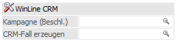
Ø Kampagne (Beschl.)
Es kann eine gewünschte Kampagne zur jeweiligen E-Mail hinterlegt werden. Wenn eine E-Mail an eine Kampagne versendet wird und das Adressfeld mit der Eingabetaste der Tastatur bestätigt wird, dann wird das Feld "Kampagne (Beschl.)" mit diesem Eingabewert vorbelegt.
Ø CRM-Fall erzeugen
Aus dem Workflow-Matchcode kann ein Workflow-Startpunkt bzw. eine Aktion selektiert werden, um diese(n) beim Versand ausführen zu lassen.
WinLine Archiv
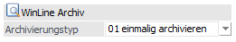
Ø Archivierungstyp
Über die Auswahl des Archivierungstypen können folgend aufgeführte Optionen definiert werden:
ü 00 - immer archivieren
Mit der
Option "immer archivieren" wird ein Archiveintrag mit der E-Mail erzeugt und pro
Empfänger mit deren Daten beschlagwortet.
ü 01 - einmalig archivieren
Mit
der Option "einmalig archivieren" wird die E-Mail (wenn diese über/an eine
Kampagne versendet wird) mit dem Schlagwort (der sog. Beschlagwortung) der
Kampagne archiviert.
ü 02 - nicht archivieren
Mit der
Option "nicht archivieren" wird die E-Mail zwar archiviert, jedoch nicht
beschlagwortet.
Office-Zertifikat
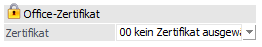
Ø Zertifikat
An dieser Stelle kann ein Zertifikat eingegeben werden.
WinLine-Signatur
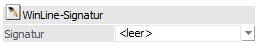
Ø Signatur
Im Postausgangsbuch können die zur Verfügung stehenden Signaturen manuell ausgewählt werden.
Office-Vorlagen
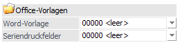
Ø Word-Vorlage / Seriendruckfelder
Hier können für Word-Vorlagen oder Seriendruckfelder erstellte Office-Vorlagen selektiert werden.
Das Erstellen der entsprechenden Vorlagen erfolgt entweder direkt über Microsoft-Office, oder über den Ribbon-Button "Vorlagen (Office / HTML)". Dieser Button öffnet das zugehörige Fenster "Postausgangsbuch-Vorlagen".
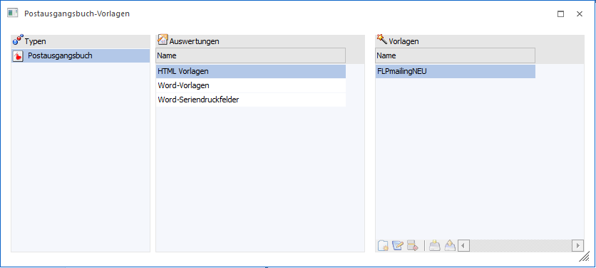
Es stehen drei Auswerte-Arten zur Verfügung:
ü HTML Vorlagen (für den Vorlage-Typen "Office" nicht relevant; wird eine Vorlage für diese Auswertung selektiert, wechselt der Vorlagen-Typ im Postausgangsbuch auf "Datei")
ü Word-Vorlagen
ü Word-Seriendruckfelder
Jede der drei Auswertungen bietet im Bereich "Vorlagen" bereits angelegte Ergebnisse an. Mit der Checkbox "Standard" kann die entsprechende Vorlage für das Postausgangsbuch vorbelegt werden.
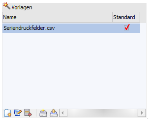
Für Word-Vorlagen bzw. Seriendruckfelder" stehen weiterhin entsprechende Tabellen- bzw. Ribbon-Buttons zur Verfügung.
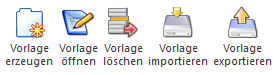
ü Vorlage erzeugen (für
Word-Seriendruckfelder)
Im Fenster "Postausgangsbuch-Vorlagen" kann eine neue
Vorlage mit den Seriendruckfeldern erstellt werden, welche an Microsoft Word
übergeben werden sollen.
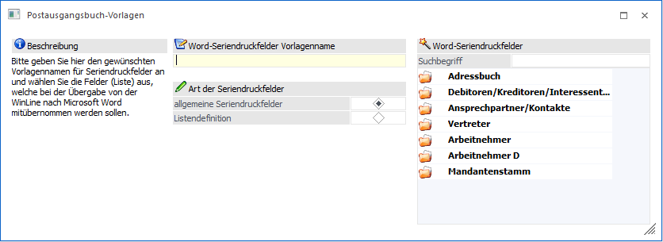
ü Vorlage öffnen
Öffnet eine
bereits vorhandene Vorlage, sodass diese bearbeitet und gespeichert werden
kann.
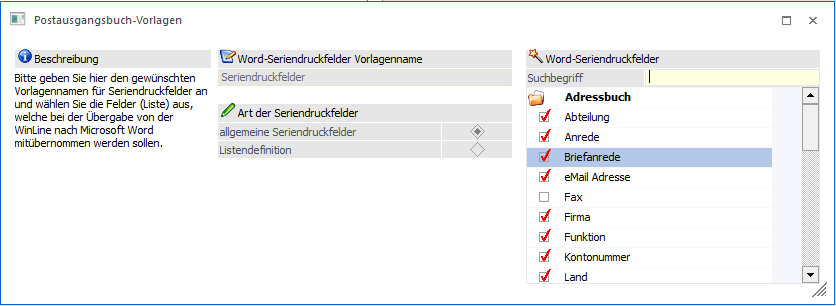
ü Vorlage löschen
Ermöglicht das
Löschen einer vorhandenen Vorlage.
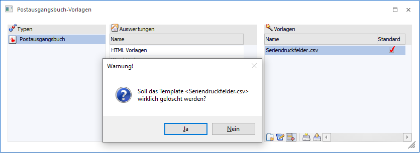
ü Vorlage importieren
Ermöglicht
den Import einer vorhandenen *.csv-Datei (bei Seriendruckfeldern) bzw. *.dotx-,
*.docx-, *.dot-, oder *.doc-Dateien (bei Word-Vorlagen).
ü Vorlage exportieren
Über ein
Datei-Fenster kann der Ort für das Speichern im *.dotx- bzw. *.csv-Format
gewählt werden.
Textbaustein für E-Mail
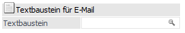
Ø Textbaustein
Bei der Auswahl des Vorlagen-Typs "Textbaustein" kann an dieser Stelle ein entsprechender Baustein hinterlegt werden.
Datei
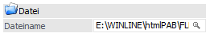
Ø Dateiname
Bei der Selektion des Vorlagen-Typs "Datei" können im Eingabefeld "Dateiname" durch Eingabe der Datei- bzw. Pfadangaben, oder über das Anklicken des Lupen-Symbols (aus der sich dann öffnenden Dateiauswahl) die Dateitypen *.htm, *.html bzw. *.txt selektiert werden.
Diese Option wird ebenso über die Selektion des Ribbon-Buttons "Vorlagen (Office / HTML)" im Fenster "Postausgangsbuch-Vorlagen" geboten, wenn aus dem Bereich "Auswertungen" Vorlagen gewählt werden.
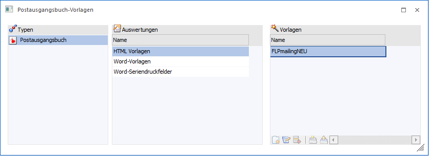
Der Verweis auf die gewählte Vorlage (Dateiname und Pfadangabe) wird anschließend in das Feld "Dateiname" übernommen.
MesoAnalytics
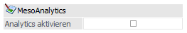
Ø Analytics aktivieren
Durch Aktivieren der Checkbox "Analytics aktivieren" können E-Mail-Sendungen in der WinLine START im Menüpunkt CRM>MesoAnalytics ausgewertet werden.
Hinweis
Die Checkbox steht nur dem Typ "Datei" zur Verfügung.
FLP Sendung
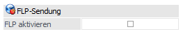
Ø FLP aktivieren
Durch Selektion der Checkbox "FLP aktivieren" kann durch den Empfänger der E-Mail eine publizierte Functional Landingpage (FLP) angesurft werden. Ermöglicht wird dies durch die Einbettung eines gültigen MesoCloud-Links in der Postausgangsbuch-Vorlage.
Hinweise
Die Checkbox steht nur bei dem Typ "Datei" zur Verfügung. Bei einem Testzugang können maximal fünf FLP-Seiten in der MesoCloud publiziert werden.
Weitere Buttons
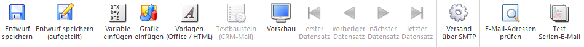
Ø Entwurf speichern
Mit dem Button "Als Entwurf speichern" wird die Nachricht als Entwurf abgespeichert. Diese können anschließend durch einen Doppelklick wieder geöffnet werden.
Ø Entwurf speichern (aufgeteilt)
Durch die Selektion des Buttons können Serien-E-Mails aufgeteilt (pro Empfänger eine E-Mail) und unter "Entwürfe" abgelegt werden.
Hinweis 1
Unter "Entwürfe" werden solche E-Mails automatisch ausgewählt und können per Button "Senden" direkt versendet werden.
Hinweis 2
Der Button "Entwurf speichern (aufgeteilt)" steht nur für den Versand von Serien-E-Mails zur Verfügung.
Ø Variable einfügen
Mit dem Button "Variable einfügen" können Variablen als Link direkt eingefügt werden.
Ø Grafik einfügen
Mit Hilfe des Buttons "Grafik einfügen" können Bilder in Korrespondenzen eingefügt werden.
Hinweis
Vor dem Versand werden die Bilder als Link angezeigt und zusätzlich im Anhang dargestellt. Dieses Verhalten wird vor dem eigentlichen Versand aufgelöst.
Ø Vorlagen (Office/HTML)
Mit dem Button können zu den Auswertungen z. B. zuvor erzeugte *.dot-Dateien als Vorlage importiert, andererseits bereits erzeugte HTML-Vorlagen für den Mailversand ausgewählt werden. Zusätzlich können Word-Vorlagen und Word-Seriendruckfelder definiert werden.
Ø Textbaustein (CRM-Mail)
Über den Button "Textbaustein Auswahl CRM-Mail" kann aus der Textbausteingruppe "82 E-Mail PAB" zu einem anderen Textbaustein aus dieser Gruppe gewechselt werden.
Ø Vorschau
Der Button "Vorschau" steht nur bei den Versandoptionen "Einzel-E-Mail" und "Serien-E-Mail" zur Verfügung. Durch die Anwahl des Buttons werden die Textvariablen durch die jeweiligen Daten ersetzt und es kann mit den VCR-Buttons zwischen den Emails gewechselt werden.
Hinweis
Wenn die Vorschau aktiviert wurde, ist ein Blättern auch über eine Eingabe in dem Feld "VorschauNr" möglich.
Ø VCR-Buttons
Über die sogenannte VCR-Buttonleiste kann durch Mausklick oder mit der Tastatur zwischen den Datensätzen, sofern die Vorschau aktiviert ist, geblättert werden.
ü  Es kann der erste Datensatz angesprochen werden
Es kann der erste Datensatz angesprochen werden
ü Es kann der vorherige Datensatz angesprochen
ü  Es kann der nächste Datensatz angesprochen
Es kann der nächste Datensatz angesprochen
ü  Es kann der letzte Datensatz angesprochen werden
Es kann der letzte Datensatz angesprochen werden
Ø Versand über Outlook/Versand über SMTP
Das Selektieren dieses Ribbon-Buttons ändert den Status: Es kann beim E-Mail-Versand zwischen der Versandart "SMTP" oder "Outlook" gewählt werden.
Hinweis
Beide Versandarten setzen eine korrekte Einstellung/Definition innerhalb der WinLine START>PARAMETER>Einstellungen… voraus.
Ø E-Mail-Adressen prüfen
Mit diesem Button werden die E-Mail-Empfänger-Adressen geprüft.
Ø Test Serien-E-Mail
Mit dem Button wird eine Test-E-Mail von der E-Mail-Adresse gesendet, welche im Ribbon im Bereich "Info Center und Makros" in der Combobox definiert wurde.